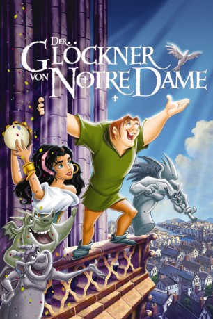

#1571 Der Glöckner von Notre Dame
Alternativ: The Hunchback of Notre Dame
Auszeichnungen: für 1 Oscars nominiert
 
 IMDB-Wertung: 6.9 / 10
IMDB-Wertung: 6.9 / 10  Metascore: 0
Metascore: 0 
Aus seinem Glockenturm hoch über den Dächern von Paris verfolgt der Glöckner Quasimodo sehnsüchtig das Fest der Narren – die fröhlichste Party des Jahres. Obwohl es ihm verboten wurde, ermutigen ihn seine urkomischen Freunde, an dem Fest teilzunehmen. So wagt sich Quasimodo in das Getümmel und erlebt eine Welt, von der er bislang ausgeschlossen war. Nur die schöne, temperamentvolle Esmeralda begegnet ihm mit Toleranz und Freundschaft. Als er sie vor Verfolgern schützt, gerät Quasimodo in ein ergreifendes Abenteuer voller Action, Spaß und Überraschungen, die ihn schließlich zum Helden von Paris werden lassen.
Jahr: 1996
Dauer: 91 Minuten
FSK: 6
Land: USA Studio: Buena Vista PicturesTonspuren: DTS - ,
Untertitel: Deutsch,
Auflösung: 1080p (1920x1080) Größe: 4290 MB
Genre: Drama, Animation/Trick, Familie, Liebe, Musical
Regisseur: Gary Trousdale, Kirk Wise
Drehbuch: Tab Murphy, Victor Hugo, Tab Murphy, Irene Mecchi, Bob Tzudiker
Soundtrack: Alan Menken
Darsteller:
Datei: X:\Kinder Disney HD\Glöckner von Notre Dame\Glöckner von Notre Dame, Der (1996, FSK6, 1920x1080).mkv seit 22.07.2015
Festplatte: Kinder-Filme+Trick
 Alle Filme aus Gruppe 'Kinder Disney HD\Glöckner von Notre Dame'
Alle Filme aus Gruppe 'Kinder Disney HD\Glöckner von Notre Dame'